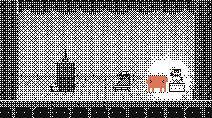

Hi, I'm Yann, a student living in France. Online I go by yannworks. I like building apps with AI and learning how things work. I also enjoy writing and music.
- X
- GitHub
- Experiments my lab of UI components

Hi, I'm Yann, a student living in France. Online I go by yannworks. I like building apps with AI and learning how things work. I also enjoy writing and music.
